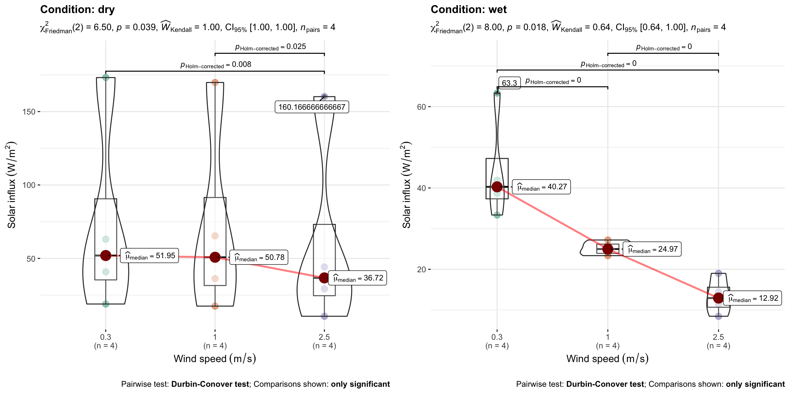
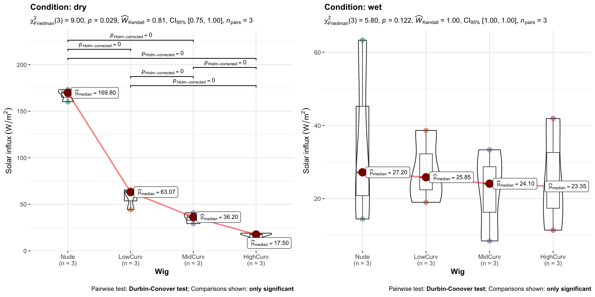
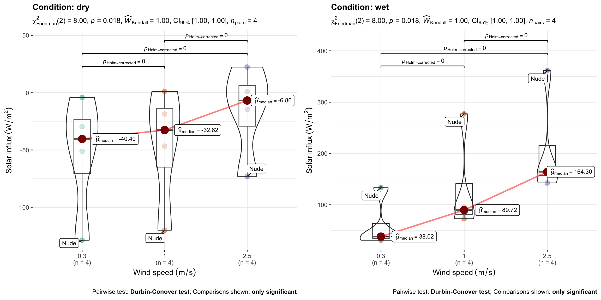
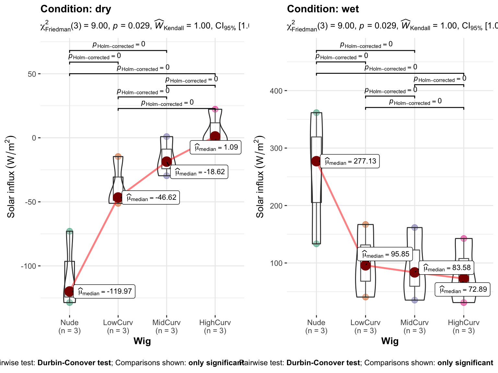
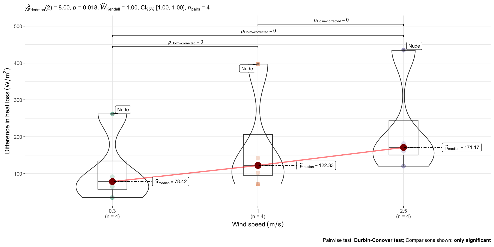
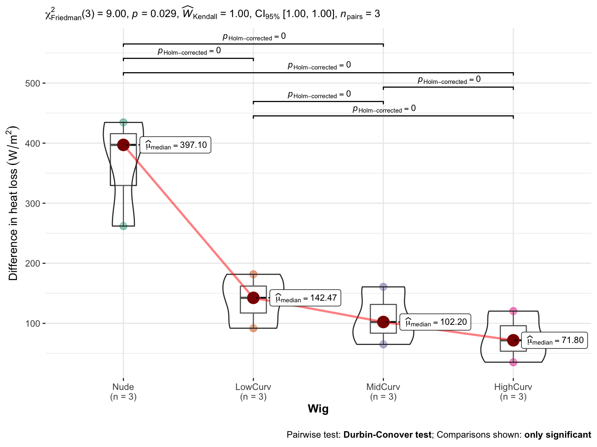
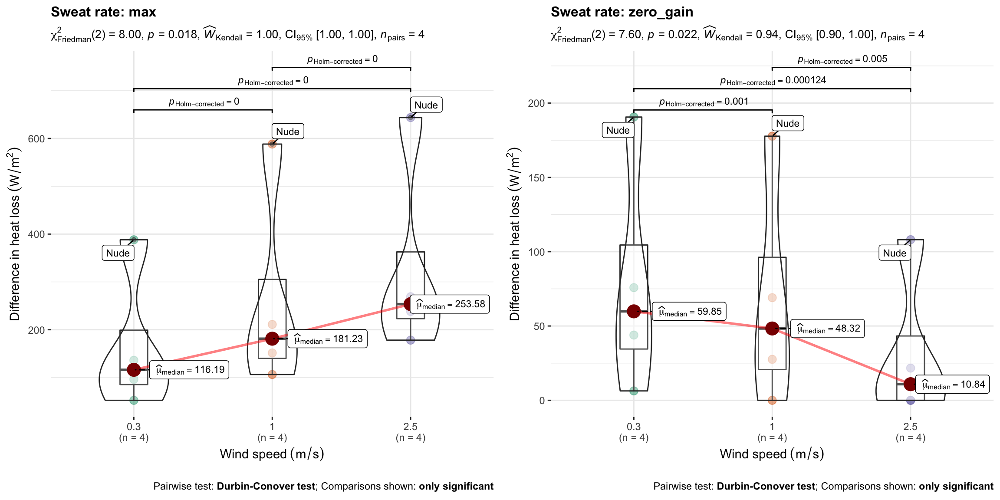
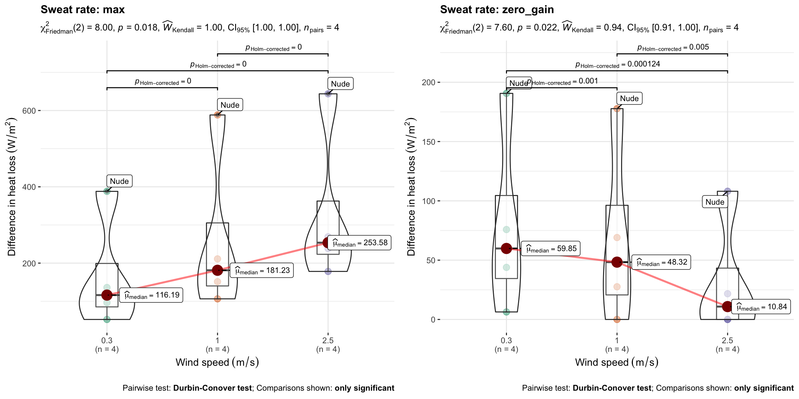

Manikin data
Tina Lasisi
January 20, 2021
Last updated: 2021-01-20
Checks: 7 0
Knit directory: HairManikin/
This reproducible R Markdown analysis was created with workflowr (version 1.6.2). The Checks tab describes the reproducibility checks that were applied when the results were created. The Past versions tab lists the development history.
Great! Since the R Markdown file has been committed to the Git repository, you know the exact version of the code that produced these results.
Great job! The global environment was empty. Objects defined in the global environment can affect the analysis in your R Markdown file in unknown ways. For reproduciblity it’s best to always run the code in an empty environment.
The command set.seed(20200601) was run prior to running the code in the R Markdown file. Setting a seed ensures that any results that rely on randomness, e.g. subsampling or permutations, are reproducible.
Great job! Recording the operating system, R version, and package versions is critical for reproducibility.
Nice! There were no cached chunks for this analysis, so you can be confident that you successfully produced the results during this run.
Great job! Using relative paths to the files within your workflowr project makes it easier to run your code on other machines.
Great! You are using Git for version control. Tracking code development and connecting the code version to the results is critical for reproducibility.
The results in this page were generated with repository version 39d1ec9. See the Past versions tab to see a history of the changes made to the R Markdown and HTML files.
Note that you need to be careful to ensure that all relevant files for the analysis have been committed to Git prior to generating the results (you can use wflow_publish or wflow_git_commit). workflowr only checks the R Markdown file, but you know if there are other scripts or data files that it depends on. Below is the status of the Git repository when the results were generated:
Ignored files:
Ignored: .Rhistory
Ignored: .Rproj.user/
Ignored: data/raw/Havenith_2021_Manikin_Dry_Wet_Summary/
Ignored: data/raw/ManikinData_March2018/Processed/
Ignored: data/raw/ManikinData_Oct2018/Round1/ConvertedFiles/
Ignored: data/raw/ManikinData_Oct2018/Round2/STEP1/
Ignored: data/raw/ManikinData_Oct2018/ThermoLog/2021-James_email/
Ignored: data/raw/ManikinData_Oct2018/ThermoLog/extracted/
Ignored: data/tidy/archive/
Untracked files:
Untracked: figure/
Note that any generated files, e.g. HTML, png, CSS, etc., are not included in this status report because it is ok for generated content to have uncommitted changes.
These are the previous versions of the repository in which changes were made to the R Markdown (analysis/manikin2021.Rmd) and HTML (docs/manikin2021.html) files. If you’ve configured a remote Git repository (see ?wflow_git_remote), click on the hyperlinks in the table below to view the files as they were in that past version.
| File | Version | Author | Date | Message |
|---|---|---|---|---|
| Rmd | 39d1ec9 | tinalasisi | 2021-01-20 | updating analyses |
| html | 423d958 | tinalasisi | 2021-01-19 | Build site. |
| Rmd | 6f4d304 | tinalasisi | 2021-01-19 | update all |
1 Dry vs. wet heat loss
The dry measurements were taken at two different temperatures - one with \(T_{manikin}= 34^\circ C\) and \(T_{ambient}= 8^\circ C\), and another with \(T_{manikin}= 38^\circ C\) and \(T_{ambient}= 4^\circ C\).
The second set of temperature options was found to be necessary with the straight (low curvature) wig in the \(0.3\; m/s\) wind speed setting with the radiation on because the manikin would overheat to the point where no heat loss could be measured. James and I then made sure to conduct all the \(0.3\; m/s\) wind speed experiments with this second option.
In the preparation of the data, George applied a correction to bring all the measurements to the same temperature, i.e. \(T_{ambient}= 4^\circ C\).
The wet measurements refer to heat exchange rather than dry heat loss. These measurements were taken with the temperature settings \(T_{manikin}= 34^\circ C\) and \(T_{ambient}= 34^\circ C\) or \(T_{manikin}=T_{ambient}\).

2 Solar influx
We can also look specifically at the effect of the radiation by subtracting the measurements with radiation off from those with radiation on.
From the plots below, it is apparent that the experiments with a “Nude” manikin scalp show a considerably different pattern than any of the wigs.
Interestingly, in the dry experiments, the effect of solar radiation appears to cluster more by wig, while the wet experiments show a solar influx that is more patterned by wind speed.
2.1 As function of heat loss (radiation off)

2.2 As function of wind speed
Below, we plot the same net heat loss as a function of wind speed. Similarly, we see that, in the dry experiments, there is a very clear effect of wig type and no hair, while the wet experiments show a much more pronounced effect of windspeed.

Testing this as a nonparametric repeated measures anova, it appears that wind speed is significant in each case.

Looking at the effect of wigs, we see that this is only significant effect in the dry experiments, although the range of variation is much reduced in the wet experiments.

3 Heat loss at 30 C
Here are plots for the total heat losses (convective + radiative) recalculated for an ambient temperature of \(30^\circ C\).
What becomes apparent now is that there is a substantial heat gain in the dry condition.
However, the wet condition assumes an “unlimited” amount of sweat (i.e. the most that can be evaporated) - but this is not physiologically realistic.

The differences between wind speed across groups appear to be statistically significant, with the “nude” condition always as an outlier.

Similarly, the differences between head covers is significant.

3.1 Difference
Looking at the difference between dry and wet heat loss, we see that the difference is stark between hair and no hair. Suggesting that unlimited evaporation renders hairlessness much more beneficial. We also see a steady increase in the difference between wet and dry heat losses with increases in wind speed due to the increasing contribution of convection to the evaporation.

The differences appear to be significant between windspeed.

Similarly, differences between wigs are significant.

4 Sweat requirement
Another way to approach the comparison is to calculte the sweat rate. Here, we plot the sweat rate potential (left) and the sweat rate required to cancel out heat gain at \(T_{ambient} = 30^\circ C\).
What emerges is that while heat loss potential is higher without hair as a barrier (i.e. the “nude” condition), the potential sweat far exceeds the physiologically possible sweat rate for humans. The plot for zero heat gain shoes that a nude scalp requires the most sweat and this requirement is inversely correlated with hair curvature.

The effect of wind speed appears to be significant in both cases.

Also, hair appears to be a significant contributor to the sweat requirement.

R version 3.6.3 (2020-02-29)
Platform: x86_64-apple-darwin15.6.0 (64-bit)
Running under: macOS Mojave 10.14.6
Matrix products: default
BLAS: /Library/Frameworks/R.framework/Versions/3.6/Resources/lib/libRblas.0.dylib
LAPACK: /Library/Frameworks/R.framework/Versions/3.6/Resources/lib/libRlapack.dylib
locale:
[1] en_US.UTF-8/en_US.UTF-8/en_US.UTF-8/C/en_US.UTF-8/en_US.UTF-8
attached base packages:
[1] stats graphics grDevices utils datasets methods base
other attached packages:
[1] ggstatsplot_0.6.8 tidyquant_1.0.2
[3] quantmod_0.4.18 TTR_0.24.2
[5] PerformanceAnalytics_2.0.4 xts_0.12.1
[7] zoo_1.8-8 lubridate_1.7.9.2
[9] fuzzyjoin_0.1.6 janitor_2.1.0
[11] fs_1.5.0 kableExtra_1.3.1
[13] knitr_1.30 forcats_0.5.0
[15] stringr_1.4.0 dplyr_1.0.3
[17] purrr_0.3.4 readr_1.4.0
[19] tidyr_1.1.2 tibble_3.0.5
[21] ggplot2_3.3.3 tidyverse_1.3.0
loaded via a namespace (and not attached):
[1] utf8_1.1.4 tidyselect_1.1.0
[3] lme4_1.1-26 grid_3.6.3
[5] gmp_0.6-2 munsell_0.5.0
[7] codetools_0.2-16 effectsize_0.4.3
[9] statmod_1.4.35 miniUI_0.1.1.1
[11] withr_2.4.0 Brobdingnag_1.2-6
[13] metaBMA_0.6.6 colorspace_2.0-0
[15] rstudioapi_0.13 stats4_3.6.3
[17] ipmisc_5.0.2 ggsignif_0.6.0
[19] labeling_0.4.2 git2r_0.28.0
[21] rstan_2.21.2 bbmle_1.0.23.1
[23] farver_2.0.3 bridgesampling_1.0-0
[25] rprojroot_2.0.2 coda_0.19-4
[27] vctrs_0.3.6 generics_0.1.0
[29] metafor_2.4-0 afex_0.28-1
[31] xfun_0.20 BWStest_0.2.2
[33] R6_2.5.0 BayesFactor_0.9.12-4.2
[35] reshape_0.8.8 logspline_2.1.16
[37] assertthat_0.2.1 promises_1.1.1
[39] scales_1.1.1 ggExtra_0.9
[41] gtable_0.3.0 multcompView_0.1-8
[43] processx_3.4.5 workflowr_1.6.2
[45] rlang_0.4.10 MatrixModels_0.4-1
[47] zeallot_0.1.0 PMCMRplus_1.9.0
[49] splines_3.6.3 prismatic_1.0.0
[51] broom_0.7.3 inline_0.3.17
[53] yaml_2.2.1 reshape2_1.4.4
[55] abind_1.4-5 modelr_0.1.8
[57] backports_1.2.1 httpuv_1.5.5
[59] tools_3.6.3 ellipsis_0.3.1
[61] WRS2_1.1-0 Rcpp_1.0.6
[63] plyr_1.8.6 ps_1.5.0
[65] prettyunits_1.1.1 pbapply_1.4-3
[67] cowplot_1.1.1 correlation_0.5.0
[69] LaplacesDemon_16.1.4 haven_2.3.1
[71] ggrepel_0.9.1 magrittr_2.0.1
[73] data.table_1.13.6 openxlsx_4.2.3
[75] lmerTest_3.1-3 reprex_0.3.0
[77] mvtnorm_1.1-1 whisker_0.4
[79] matrixStats_0.57.0 hms_1.0.0
[81] mime_0.9 evaluate_0.14
[83] xtable_1.8-4 rio_0.5.16
[85] pairwiseComparisons_3.1.2 readxl_1.3.1
[87] gridExtra_2.3 rstantools_2.1.1
[89] bdsmatrix_1.3-4 compiler_3.6.3
[91] V8_3.4.0 crayon_1.3.4
[93] minqa_1.2.4 StanHeaders_2.21.0-7
[95] htmltools_0.5.1 mc2d_0.1-18
[97] later_1.1.0.1 RcppParallel_5.0.2
[99] DBI_1.1.1 SuppDists_1.1-9.5
[101] kSamples_1.2-9 dbplyr_2.0.0
[103] MASS_7.3-51.5 boot_1.3-24
[105] Matrix_1.2-18 car_3.0-10
[107] cli_2.2.0 quadprog_1.5-8
[109] parallel_3.6.3 insight_0.12.0
[111] metaplus_0.7-11 pkgconfig_2.0.3
[113] statsExpressions_0.7.0 numDeriv_2016.8-1.1
[115] foreign_0.8-75 xml2_1.3.2
[117] paletteer_1.3.0 ggcorrplot_0.1.3
[119] webshot_0.5.2 rvest_0.3.6
[121] snakecase_0.11.0 callr_3.5.1
[123] digest_0.6.27 parameters_0.11.0
[125] fastGHQuad_1.0 rmarkdown_2.6
[127] cellranger_1.1.0 curl_4.3
[129] shiny_1.5.0 gtools_3.8.2
[131] nloptr_1.2.2.2 lifecycle_0.2.0
[133] nlme_3.1-144 jsonlite_1.7.2
[135] carData_3.0-4 viridisLite_0.3.0
[137] fansi_0.4.2 pillar_1.4.7
[139] lattice_0.20-38 loo_2.4.1
[141] fastmap_1.0.1 httr_1.4.2
[143] pkgbuild_1.2.0 glue_1.4.2
[145] bayestestR_0.8.0 zip_2.1.1
[147] stringi_1.5.3 performance_0.6.1
[149] rematch2_2.1.2 Quandl_2.10.0
[151] memoise_1.1.0 Rmpfr_0.8-1